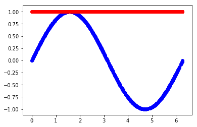
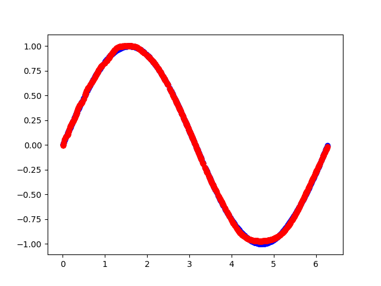

从零开始写NN（下）
上篇博文主要介绍了写一个简单的深度神经网络可能需要注意的细节点，这篇延续上篇内容，将在算法细节和调参上也写一点经验和想法。
算法细节
显然，自己去写一个神经网络算法与流行的算法框架（tensorflow/pytorch/mxnet等）还是有巨大的差距的，因为一些算法细节的地方并没有实现，下面简单清点一下值得关注的几个地方（可能有遗漏，发现后会更新博客）。
Epoch & Batch Size
train函数的代码中，我给epoch和batch_size之间做了一个shuffle，主要是为了每次学习的时候会有不同的数据分布进入学习，防止每次数据出现相同的分布，被神经网络抽象成了一个feature，这样一来，模型的泛化能力可能会受到影响。我在这里使用的随机数生成方法是：先随机得到一个seed再产生随机数来打乱x以及y的序列，但倘若每次产生的种子相同，那随机序列也就被重复了，所以最好是每次产生的种子不要重复。
Activation function
代码里只提供了三种激活函数：sigmoid tanh relu，可以扩展更多。
y-a_s别写反了
这个其实没什么值的说的，不过因为我之前写反了，导致loss一直不能下降，学了半天学出了下图的样子，查了半天才发现是自己写成了a_s-y；所以说计算梯度的时候千万别搞错了正负号。

上面几点其实都是很容易就可以改好的，而算法框架还有很多厉害之处：
loss函数
loss函数针对不同的问题，会有不同的定义，比如分类问题常用的是cross entropy（关于cross entropy的介绍可以查看我之前的博客）；回归问题可能会使用1范数甚至0范数+正则项；另外明确所使用的loss函数也会让代码变的一目了然，而上篇所述的代码则没有将loss函数解耦出来。
优化器optimizer
优化算法有很多中，之前的博客介绍过牛顿迭代法，上篇所述代码中使用的则是简单的梯度下降法，其中学习率/步长都是固定的；此外，还有很多启发式的优化算法，这里就不得不提大名鼎鼎的adam算法了，这个算法本身的实现都得好好研究一番了，集成到神经网络的算法框架中是非常值得尝试的。
Dropout
一般认为构建神经网络最好是deep一下，表达能力才会提高（现在也有人提出wide&deep了）。如果两层神经元之间采用全连接往往会造成过拟合，这里可以设置每一层神经元都有一定比例随机的丢弃部分神经元，这便是Dropout的做法，其实就是一个正则化的方法，增加了模型的泛化能力。这一点也是值得尝试增加的功能。
理论上有了BN层就可以不需要Dropout了，在博客卷积神经网络之Batch-Normalization（二）：Why？中我也给过一点分析。
Batch Normalization
之前写过两篇关于Batch Normalization的博客，这里不再赘述了；这个算法点相对来说是比较容易实现并且很容易和源代码解耦的。
CNN、ResNet、attention等
上面列举的几个相对特殊的网络，实现起来都不得不修改源码了；然而一个优秀的深度学习算法框架最好能够实现几乎所有流行的神经网络架构，而未来可能会出现很多新的算法，从架构师的角度来看，算法框架必须要有非常好的扩展性能。依我个人的愚见，算法框架应该有一个“完备性”，所有的已经实现的算法都可以用最基础的几个定义来实现，这里就不得不吹一波基于计算图的算法框架了。
调参
首先来看一下怎么调用上篇所述的类：1
2
3
4
5
6
7
8
9
10
11
12
13
14
15
16
17
18import numpy as np
import matplotlib.pyplot as plt
from NeuralNetwork import NeuralNetwork
# 造一个sin函数<x,y>作为labeled数据
X = 2*np.pi*np.random.rand(1000)
y = np.sin(X)
nn = NeuralNetwork([1,100,80,1],activations=['tanh','tanh','tanh'])
nn.train(X, y, epochs=1000, batch_size=10, lr = 0.01) # 得到最终的模型参数w,b
xx=X.reshape(1, -1)
yy=y.reshape(1, -1)
_, a_s = nn.feedforward(xx) # 使用全新的模型进行拟合
plt.scatter(xx.flatten(), yy.flatten(),color='blue')
plt.scatter(xx.flatten(), a_s[-1].flatten(),color='red')
plt.show()
从上面的代码来看，可以调整的参数其实不多，下面从数据开始逐个做一点简单的分析：
数据归一化 (normalization)
这里y恰好是sin函数的值，大小都在[-1, 1]内，算是已经进行了归一化了。
网络架构
网络架构一般不会作为优先调整的参数，如果认为网络加深可以提升网络质量，可以在现有架构下达到最优参数后再尝试增加网络层数，因为如果最后一层不需要，那么也是可以学出来该层对应的权重都是1这样；同样，神经元个数也是这个道理。
激活函数的选取
这里需要注意的是最后一层输出需要在[-1, 1]内，所以这里只能用tanh了。
batch_size
一般建议batch_size先定，再定epochs，这里batch_size给的是10，如果效果不好可以再增加或者减少。
epochs
如果数据足够多，甚至有冗余，epochs就没有必要设置太大，一般建议从小数往上加，更具最终的学习效果来看是否需要增加。
Learning rate
学习率的调整一般会和batch_size有一定的关联，当batch_size比较大的时候，学习率可以适当给大一点，不过太大不太容易陷入局部极小值也不太容易找到全局极小值；学习率比较小的话则比较容易陷入局部极小值；总之，太大太小都有可能造成计算资源的浪费。所以还是adam大法好 : )
拟合效果：

总结
上篇实现了一个简单的神经网络算法，但是很多有利于提高网络能力的方法并没有被集成进来，此外，算法的可扩展性并不是很强；这篇博文主要是对上篇所述的代码进行一个补充说明，增加一些改进点的分析，分享一点使用上的心得；最后，顺便赞扬一番TensorFlow/PyTorch/MXNet这些非常优秀的深度学习算法框架。